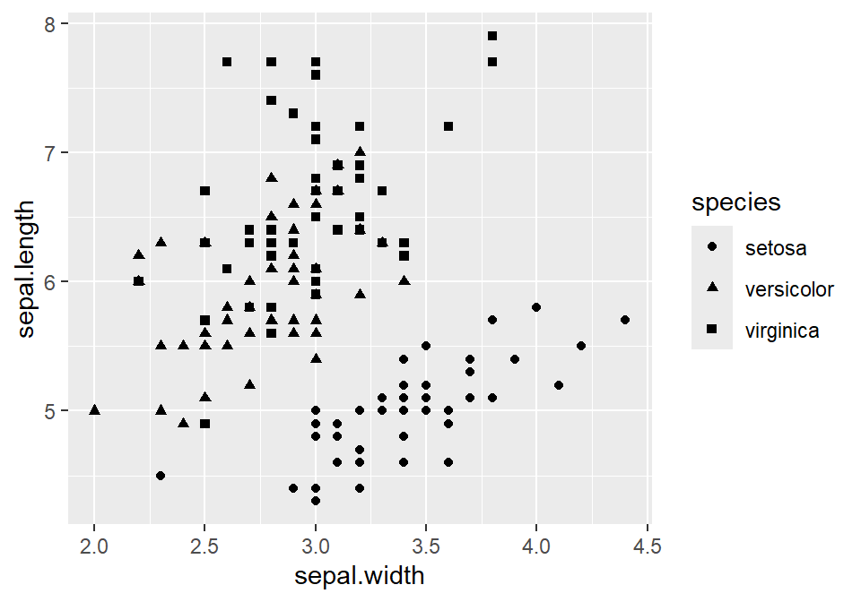
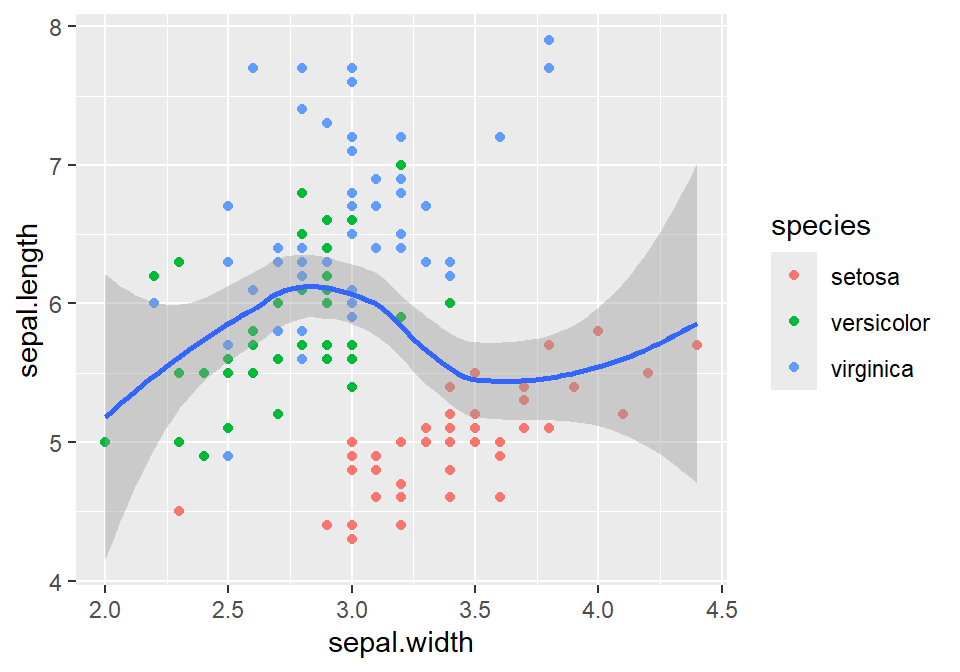
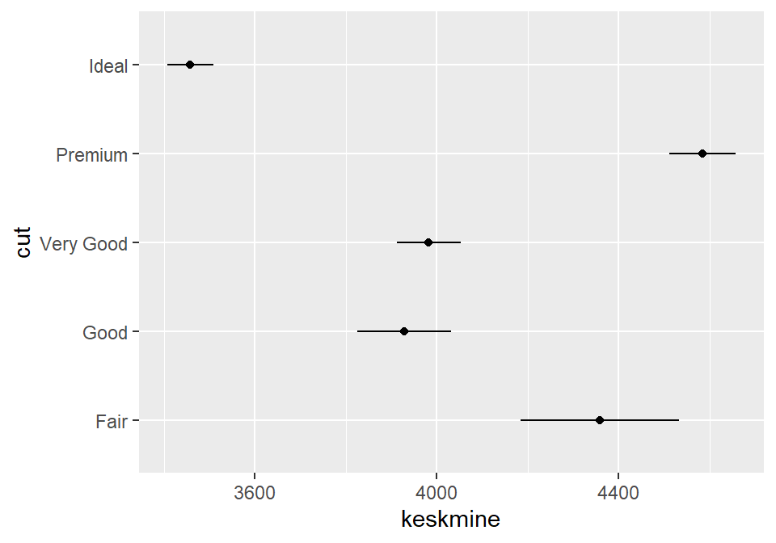

Peatükk 2 Sissejuhatus R-i
2.1 Päris algus
Mis see R on?
- Analüüsikeskkond
- Programmeerimiskeel
- Vabavara
- Põhineb kasutajate kirjutatud pakkettidel, ehk siis pidevalt arenev
- Andmeanalüüsi seisukohalt praktiliselt piiramatute võimalustega
- Järjest enam kasutatav
- Publikatsioonitaseme andmegraafika
- Suhteliselt järsu õppimiskõveraga, aga kui see ületatud, siis läheb lihtsamaks :)
Miks R?
- Kui on vajadus natukenegi tõsisemalt andmeanalüüsi või andmegraafikaga tegeleda, siis tuleb mingi hetk nii ehk naa R ära õppida (või siis näiteks Python).
- Kui vahest harva on vaja mõni analüüs teha, siis ei ole ju mingit mõtet selle jaoks kallist (ja ebaefektiivset) kommertstarkvara soetada. R see-eest on tasuta.
- Seega küsimus võiks pigem kõlada, et miks SPSS, Stata, SAS või Mplus?
Mida R’i kasutamiseks vaja on?
Baasprogramm
https://cran.r-project.org/
RStudio kasutajaliides
https://www.rstudio.com/
Saab tegelikult hakkama ka ainult baasprogrammiga. Kuid RStudio teeb töö päris palju mugavamaks ja efektiivsemaks ning lisab võimalusi (näiteks R Markdown analüüside kommunikeerimiseks, projektihaldus jne).
On ka teisi kasutajaliideseid ja scriptide kirjutamise abivahendeid, kuid RStudio on neist kahtlemata kõige populaarsem, funktsionaalsem ja mugavam.
Kuidas R’i ja RStudiot kasutada?
R’is ei ole rippmenüüsid, OK nuppe ega avanevaid aknaid. Kõik käsud tuleb käsureale sisse trükkida. Ühest küljest nõuab see kasutajalt mõnevõrra põhjalikumat arusaamist oma tegevusest, teisalt võimaldab tegevusi kombineerida, neist head ülevaadet saada ning tehtud analüüse lihtsalt korrata (reproducible research)
Projektide haldamine
RStudio võimaldab erinevaid töid hallata projektidena. Igal projektil on projektikaust (nn juurkataloog), kuhu saab salvestada kõik antud projektiga seonduvad scriptid, andmed jne. Uue projekti loomiseks klikkige File -> New Project, misjärel saab valida kataloogi, kuhu projekt (ja seega kõik projektiga seotud matejalid) salvestub.Skriptide loomine
Kõik, mida me andmetega teeme, tuleks salvestada skripti (tegelikult on tegemist kõige tavalisema tekstifailiga). Uue skripti saab teha valides RStudios File -> New File -> R Script
Skriptide kaudu on meil ülevaade kõigest, mida me andmetega teinud oleme (andmeteisendused, analüüsikäik jne) ning samas saame iga hetk oma analüüsi korrata.
Skriptis olevat koodi saame jooksutada kui märgime vajaliku koodi ära ja vajutame Cntr+Enter või kasutame scriptiakna üleval paremas servas asuvat nuppu Run.
R kui kalkulaator
2 + 3## [1] 5(4 - 2) / 2 # sulud toimivad nii nagu nad toimima peavad## [1] 110 * 10 # korrutamine## [1] 10010 / 5 # jagamine## [1] 23^2 #astendamine## [1] 93**2 # ka nii saab astendada## [1] 9Loogilised tehted
2 == 2 # võrdub## [1] TRUE1 != 2 # ei võrdu## [1] TRUE2 >= 2 # suurem kui või võrdne## [1] TRUE1 < 2 # väiksem kui## [1] TRUE(3<6) | (6<3) # loogiline või## [1] TRUE(3<6) & (6<3) # loogiline ja## [1] FALSEAndmeobjektid
R töötab andmeobjektidega ehk andmetega, mis on salvestatud mingisse objekti. Andmeobjekt võib sisaldada üksikut numbrilist väärtust (või ka näiteks sõna), aga ka mitut üksiväärtus koondavat vektorit (seega tunnus) või hoopis mitut andmevektorit koondavat andmestikku.
Andmeobjektile väärtuse omistamine toimub “<-” märgiga.
x <- 1Omistasime objektile x väärtuse 1. Nüüd käsitleb R x’i kui 1’te ja me saame sellega näiteks tehteid teha.
x + 1## [1] 2a <- 10
a## [1] 10a <- a + 10 # kirjutame algse a üle ja omistame talle uue väärtuse
a## [1] 20Andmeobjektide nimed ei tohi sisaldada tehtemärke või tühikut ega alata numbriga. Sõnu võib vajadusel eristada näiteks punkti või alakriipsuga: a.1, a_1 . Ei ole ka soovitatav kasutada ka täpitähti (kuigi üldjuhul R neid tunnistab).
R eristab suuri ja väikeseid tähti. R ei võrdu r’iga.
Andmeobjektid võivad sisaldada ka sõnu, lauseid või terveid lõike.
linn <- "Tallinn"
linn## [1] "Tallinn"kool <- "Tallinna Ülikool"
kool## [1] "Tallinna Ülikool"Jutumärgid annavad R’ile teada, et tegemist on tekstiga ja mitte teise andmeobjekti või funktsiooniga.
Loogilised andmed (TRUE või FALSE)
a <- TRUE
a## [1] TRUEb <- FALSE
b## [1] FALSELoogilisi väärtused on tulemuseks loogilistele tehetele.
c <- 3 > 2
c## [1] TRUER käsitleb loogilisi väärtusi sisemiselt 1 ja 0’ina, seega saame ka nendega tehteid teha:
a## [1] TRUEb## [1] FALSEa + b## [1] 1Puuduvad väärtused
Puuduvate väärtuste jaoks on tähis NA.
c <- NA
c## [1] NAa## [1] TRUEc + a## [1] NAMiks on tulemuseks NA? Kui me liidame mingi arvu millelegi, mida me ei tea, siis me ju ei tea ka vastust.
Ülesanne!
- tehke andmeobjekt synniaasta, mille väärtuseks on Teie sünniaasta
- tehke andmeobjekt aasta, mille väärtuseks on 2017
- arvutage kui vana te olete?
- kontrollige looglise tehtega, kas Teie sünniaasta ikka on väiksem kui 2019
- tehke andmeobjekt nimi, mille väärtuseks on Teie nimi
Funktsioonid
Enamik toimingutest toimub R’is funktsioonide abil.
sqrt(4) # ruutjuure funktsioon## [1] 2Funktsioonile järgnevad alati sulud, milles tuleb määrata funktsiooni argument (antud juhul 4, ehk number millest tahame ruutjuurt võtta). Argumente võib olla ka rohkem kui üks (ja üldjuhul ongi). Sellisel juhul on nad eraldatud komaga. Funktsioonil log() on kaks argumenti: x, ehk arv millest me tahame logaritmi võtta ja base ehk logaritmi alus.
log(x = 100, base = 10)## [1] 2Kui me teame argumentide järjekorda, siis me ei pea nende tähiseid eksplitsiitselt välja kirjutama.
log(100, 10)## [1] 2Osadel argumentidel on vaikeväärtused ( näit log() funktsiooni puhul base argumendi vaikeväärtuseks e ehk 2.7) Kui me vaikeväärtusega argumenti välja ei kirjuta, kasutatakse vaikeväärtust.
log(x=100)## [1] 4.60517See kehtib muidugi ainult sellisel juhul kui teisel argumendil on vaikeväärtus. Kuidas me seda aga teadma peaksime? Kõige lihtsam on vaadata funktsiooni abilehte, kus on kõik selle argumendid loetletud.
Kuidas abi saada?
Iga funktsiooni kohta on R’is abileht millele pääseb ligi kirjutade funktsiooni nime ette ?.
?log
help(log) # saab ka niiKui on spetsiifilisemad probleemid, saab alati googeldada. Erinevaid materjale, tutoriale, foorumeid jne on väga palju.
Vektorid
Üldiselt ei tööta me üksikväärtustega (skalaaridega) vaid andmejadade ehk vektoritega. Vektori loomine ehk mitmest väärtusest andmeobjekti loomine käib c() funktsiooniga.
see <- c(3,6,1,4,10)
see## [1] 3 6 1 4 10too <- c("a", "b", "c") # vektor võib sisaldada ka teksti
too## [1] "a" "b" "c"Sarnaselt üksikväärtustega saab ka vektoritega tehteid teha.
see## [1] 3 6 1 4 10too <- see * 2
too## [1] 6 12 2 8 20see + too## [1] 9 18 3 12 30Kui üks vektor on teisest lühem, siis R taaskasutab lühema vektori väärtusi.
pikk <- c(1,1,2,2,3,3)
lyhike <- c(10, 100)
pikk * lyhike## [1] 10 100 20 200 30 300See juhtub ka siis, kui lühem vektor ei ole pikema täisarvuline jagatis:
pikk <- c(1,1,2,2,3,3, 4)
lyhike <- c(10, 100)
pikk * lyhike## [1] 10 100 20 200 30 300 40Üldiselt me sellist asja teha ei taha. Õnneks antakse taolisest olukorrast meile ka hoiatusteatega märku. Aga miks taoline vektoriseeritus üldse vajalik peaks olema? Asi on selles, et R käsitleb kõiki objekte vektoritena. Ka üksik number on vektor, mille pikkus on 1. Ehk siis just vektoriseeritus võimaldab meil teha nii:
c(1,2,3,4) * 2## [1] 2 4 6 8Ja midagi taolist tahame me teha päris tihti.
Vektori elementidele saab ka nimesi anda (ja üksikväärtustele muidugi ka)
see2 <- c(a=1, b=2, c=3)
see2## a b c
## 1 2 3Indekseerimine
Kuidas üksikuid väärtusi vektorist kätte saada? Neile saab ligi kasutades [ ] funktsiooni koos soovitava väärtuse indeksiga (positsiooninumbriga).
see <- c(3,6,1,4,10)
see[2] # tahame teada vektori teist väärtust## [1] 6a <- see[2] # tahame selle kirjutada uude andmeobjekti
a## [1] 6see[3:4] # saame välja võtta mitu väärtust. ":" on "kuni" märk (teine kuni kolmas positsioon)## [1] 1 4Andmeobjekti elemnte saab ka välja jätta.
see[-2] # kõik elemendid välja arvatud teine## [1] 3 1 4 10Indekseerida saab ka nimega.
see2 <- c(a=1, b=2, c=3) # teeme nimedega vektori
see2["a"] # jällegi peame kasutama jutumärke, kuna ei viita mitte andmeobjektile, ## a
## 1 # vaid selle väärtuseleKui tahame nimega indekseerida mitut väärtust, peame kasutama indeksite vektorit, mille teeme c() funktsiooniga. Viitame indeksite vektoriga andmevektorile.
see2## a b c
## 1 2 3see2[c("a","b")]## a b
## 1 2Viidata saab ka loogiliste tehete või loogiliste vektoritega. Saame loogilise tehtega luua loogilise vektori, mida siis saab kasutada väärtuste väljavõtmiseks.
see <- c(3,6,1,4,10)
see > 5 # loogiline vektor## [1] FALSE TRUE FALSE FALSE TRUEsee[see > 5] # kasutame loogilist vektorit indekseerimiseks## [1] 6 10# see[c(F,T,F,F,T)] # kui me kirjutaks loogilise vektori väljaÜlesanne!
- looge vektor a milles sisalduvad numbrid 2 8 3 6 7
- looge vektor b milles sisalduvad numbrid 3 4 5 7 2
- looge vektor c, mis on kahe eelmise summa
- looge andmeobjekt d, mis sisaldab c esimest väärtust
- looge vektor e, kus on c väärtuseid, mis on suuremad kui 10
Maatriksid
Andmevektoreid saab omakorda ühendada.
see <- c(12,5)
too <- c(6,9)
loo <- cbind(see, too) # cbind ühendab vektorid veergude kaupa,
# ridade kaupa ühendamiseks on funktsioon rbind()
loo## see too
## [1,] 12 6
## [2,] 5 9Tulemuseks on uus andmeobjekt, mis kuulub klassi matrix.
Saame ka matrix() funktsiooniga maatrikseid teha:
loo <- matrix(c(12,5,6,9), nrow = 2, ncol = 2, byrow = T)
loo## [,1] [,2]
## [1,] 12 5
## [2,] 6 9Maatriksi veergudele ja ridadele saame nimesid anda:
colnames(loo) <- c("esimene_veerg", "teine_veerg")
rownames(loo) <- c("esimene_rida", "teine_rida")
loo## esimene_veerg teine_veerg
## esimene_rida 12 5
## teine_rida 6 9Andmeobjektide klassid
Erinevatel andmeobjektidel on erinevad klassid. Klassid tulenevad sellest, millist tüüpi andmed selles andmeobjektis on (numbrilised, tekstilised, loogilised jne).
class(see)## [1] "numeric"class(loo)## [1] "matrix" "array"Enamikes andmeobjektides saab olla vaid ühte tüüpi elemente. Kui numbrilises vektoris on näiteks üks tekstiline väärtus, siis arvestab R seda vektorit kui tekstilist (kuna numrit on võimalik tekstiliseks teha, kuid teksti numbriks mitte). Näiteks maatriksis võivad olla vaid numbrilised väärtused.
Üks andmeobjekt on siinkohal erandlik. Selleks on “list,” kus võib korraga olla erinevat tüüpi andmeid.
x <- list(1, c("b", "d"))
x## [[1]]
## [1] 1
##
## [[2]]
## [1] "b" "d"Ülesanne!
- teil on andmevektorid a, b, c. Ühendage need veergupidi andmestikuks koos
- mis on selle andmeobjekti klass?
Data frame (andmestik)
Kui meil on mingi andmestik, siis üldjuhul on seal erinevat liiki tunnuseid, nii arvtunnuseid kui kategoriaalseid ehk faktortunnuseid jne. Sellise andmebaasi jaoks on R’is eraldi andmeobjekti formaat - data.frame.
data.frame on iseenesest list, aga omapärane selles mõttes, et tema read peavad olema ühepikkused ja veerud peavad olema ühepikkused. Põhimõtteliselt on data.frame siis selline andmeobjekt, kus ridadeks on vaatlused ja veergudeks tunnused.
nimi <- c("Jaan", "Mari", "Kadri", "Mati")
vanus <- c(29, 42, 35, 52)
hinnang <- c(1.438, 2.763, 1.548, 2)
see <- data.frame(nimi, vanus, hinnang) # ühendame tunnused andmestikuks
see## nimi vanus hinnang
## 1 Jaan 29 1.438
## 2 Mari 42 2.763
## 3 Kadri 35 1.548
## 4 Mati 52 2.000# saab ka nii (siin peame kasutama võrdusmärki)
see <- data.frame(nimi = c("Jaan", "Mari", "Kadri", "Mati"),
vanus = c(29, 42, 35, 52),
hinnang = c(1.438, 2.763, 1.548, 2))Kui meil juba on mingi andmetabel, näiteks maatriks, saame selle muuta data.frameiks funktsiooniga as.data.frame()
loo <- cbind(c(12,5), c(6,9))
as.data.frame(loo)Sarnaselt vektoritele saame indekseerida ka data.frame’i (maatrikseid samuti). Kuna aga data.frame on kahedimensionaalne, peame kasutama kahte indeksit. Esiteks rea ja teiseks veeru indeks. Tahame teada Kadri vanust, seega 3 rida ja 2 veerg:
see[2,3]## [1] 2.763Kui jätame veeru koha tühjaks, valitakse kõik veerud.
see[2,]## nimi vanus hinnang
## 2 Mari 42 2.763Kui jätame rea koha tühjaks, valitakse kõik read
see[,3]## [1] 1.438 2.763 1.548 2.000Kui tahame valida mingit tunnust (veergu) siis võime kasutada selle numbrilist või nimelist indeksit
see[,"nimi"] # tahame nime veeru kõiki ridu, seega jätame indekseerimisel rea koha tühjaks ## [1] "Jaan" "Mari" "Kadri" "Mati"Võime valida ka mitu veergu või rida korraga.
see[1:2,1:2]## nimi vanus
## 1 Jaan 29
## 2 Mari 42Seega saame valida ainult mingi, meile vajaliku osa datasetist
Teine viis veeru ehk tunnuse valimiseks on $ märk
see$nimi## [1] "Jaan" "Mari" "Kadri" "Mati"Ülesanne!
- Teil on andmestik koos. Tehke see data.frameiks
- Võtke sealt välja esimene rida
- Võtke sealt välja veerg c ja salvestage see eraldi andmeobjektina
- Kasutades alternatiivset viisi, võtke välja veerg b
Data frame’i modifitseerimine
Data.frame’i väärtuste muutmisel saame jälle indekseid kasutada:
see$hinnang[1] <- 1 # muudame hinnangu tunnuse esimese väärtuse 1-ks
see[1, 3] <- 1 # sama mis eelmine
see## nimi vanus hinnang
## 1 Jaan 29 1.000
## 2 Mari 42 2.763
## 3 Kadri 35 1.548
## 4 Mati 52 2.000Data.frame’i uute tunnuste lisamine:
see$rahulolu <- c(2, 4, 3, 5)
see$sugu <- c("m", "n", "n", "m")
see## nimi vanus hinnang rahulolu sugu
## 1 Jaan 29 1.000 2 m
## 2 Mari 42 2.763 4 n
## 3 Kadri 35 1.548 3 n
## 4 Mati 52 2.000 5 mData.frame’i tunnuste kustutamine:
see$rahulolu <- NULL
see## nimi vanus hinnang sugu
## 1 Jaan 29 1.000 m
## 2 Mari 42 2.763 n
## 3 Kadri 35 1.548 n
## 4 Mati 52 2.000 mSaame ridade valimiseks (indekseerimiseks) kasutada loogilisi tehteid ja seega välja võtta just need vaatlused mida vajame.
see[see$vanus < 40, ]## nimi vanus hinnang sugu
## 1 Jaan 29 1.000 m
## 3 Kadri 35 1.548 nSamal ajal saame saame võtta ka ainult vajalikud veerud:
see[see$vanus < 40, c("nimi", "vanus")]## nimi vanus
## 1 Jaan 29
## 3 Kadri 35Nii saame teha andmestikust alamandmestiku, is vastab konkreetsetele tingimustele (subseti loomine):
uus <- see[see$sugu == "n", c("nimi", "hinnang")]
uus## nimi hinnang
## 2 Mari 2.763
## 3 Kadri 1.548Selleks saab kasutada ka subset() funktsiooni:
subset(see, sugu == "n", select = c("nimi", "hinnang"))## nimi hinnang
## 2 Mari 2.763
## 3 Kadri 1.548Ülesanne!
- Lisage oma andmeobjektile koos uus tunnus f, milles sisalduvad tähed a i a i a
- Looge uus data.frame, mis sisaldab tunnuseid a, b ja ainult ridu, mille väärtus tunnuses f on a
Faktorid
Faktorid on R’i kategoriaalsed tunnused. Mõned meetodid vajavad sisendiks faktoreid. Võime tekstilise tunnuse (või ka numbrilise) muuta faktoriks funktsiooniga as.factor().
x1 <- as.factor(c("punane", "roheline", "sinine", "sinine"))
x1## [1] punane roheline sinine sinine
## Levels: punane roheline sinineAga faktortasemed on järjestatud tähestiku järgi. Üldjuhul on meil ikkagi mingi oma järjekord. Peaksime selle määrama nii:
x1 <- c("punane", "roheline", "sinine", "sinine")
x1 <- factor(x1, levels = c("sinine", "roheline", "punane"))
x1## [1] punane roheline sinine sinine
## Levels: sinine roheline punaneMis aga juhtub kui me ühe taseme kogemata ära unustame:
x1 <- c("punane", "roheline", "sinine", "sinine")
x1 <- factor(x1, levels = c("sinine", "roheline"))
x1## [1] <NA> roheline sinine sinine
## Levels: sinine rohelineSeega faktorid võivad teatud kohtades natukene ohtlikud olla ning nende kasutamisel peab tähelepanelik olema.
Ülesanne!
- looge oma andmestikku koos juurde faktortunnus g, milles sisalduvad tähed r t r t r
Andmeobjektide kustutamine
R jätab kõik konkreetse sessiooni ajal loodud või imporditud andmeobjektid mällu.
Andmeobjektide kustutamine käib funktsiooniga rm().
rm(x)Kui tahame kustutada kõik mälus olevad andmeobjektid, siis …
rm(list=ls())R’i paketid
Paljud funktsioonid on kaasas “baas”R’iga. Lisaks neile on aga suur hulk funktsioone, mida on võimalik pakettidena juurde installida.
Paketid on kasutajate eneste poolt kirjutatud. Mõned neist on väga spetsiifilised, teised jällegi väga laialdaselt kasutatavad. Hetkel on ligi 13 700 paketti (kaks aastat tagasi oli neid veel 10 000).
Et paketti kasutada, tuleb see esmalt installida.
install.packages("ggplot2") # jutumärgid on vajalikudKui pakett on installitud, tuleb see R’i mällu laadida (igaks sessiooniks uuesti).
library(ggplot2) # jutumärgid ei ole vajalikudMiks peab enne igat sessiooni paketi uuesti laadima?
Kuna pakette on väga palju ja neis funktsioone veelgi rohkem, siis hakkavad funktsioonide nimed korduma. Et seda vältida, ongi mõistlik laadida vaid need paketid, mida konkreetse sessiooni ajal otseselt vaja on.
Funktsioonide nimed võivad kattuda isegi väheste laaditud pakettide korral. Sellisel juhul kasutab R viimati laetud paketi funktsiooni.
2.2 Andmetega töötamine
Andmete sisselugemine
Andmete sisselugemiseks on mitmeid erinevaid funktsioone, mille valik sõltub sellest mis formaadis meie andmed on.
Kõige mõistlikum viis andmeid hoida on .csv fail (comma separated value). Näiteks Excelis saab andmetabeli csv’ks salvestada (save as). Samuti Statas, SPSS’is jne. Olenevalt sellest mida me numbri komakohana kasutame (“.” või “,”), saab csv faili laadida funktsiooniga read.csv() või read.csv2.
andmed <- read.csv("C:/Users/Mina/Kvant analüüsi meetodid II (2019)/Andmed/andmed.csv")Kindlasti tuleb andmed kuhugi andmeobjekti (data.frame’i) sisse lugeda, muidu kuvatakse nad lihtsalt konsooli.
faili path peab olema jutumärkides. Kaldkriipsud on teistpidi kui folderi käsujoonel.
Aegajalt juhtub, et loete täiesti korralikud andmed sisse, kuid kui neid R-is vaatate, siis on ü-de, ä-de ö-de või õ-de asemel mingid imelikud krõnksud. Sellisel puhul on üldjuhul tegemist encoding’u probleemiga, st R ei saa aru kuidas arvutikeelt (see kuidas kõik tekstid ja andmed jne arvutisiseselt salvestatud on) inimkeelde tõlkida. Maailmas kasutatakse selleks erinevaid kodeeringuid, mis lähtuvad erinevatest tähestikest ja sümbolitest. Üks univesaalseid kodeeringuid, mis tuleb toime praktiliselt kõikvõimalike sümolite ja tähestikega on UTF-8. Kui nüüd juhtub, et teie sissetõmmatud andmete puhul esineb taoline encoding’u probleem, siis read.csv() funktsioonil on vastav parameeter, millega saate sobiliku encoding’u määrata.
andmed <- read.csv("C:/Users/Mina/Kvant analüüsi meetodid II (2019)/Andmed/andmed.csv",
fileEncoding = "UTF-8")On ka üks mugav pakett csv failide sissetõmbamiseks, kus see encoding on juba automaatselt määratud - readr ja selle funktsioon read_csv() (või read_csv2()).
install.packages("readr")
andmed <- read_csv("C:/Users/Mina/Kvant analüüsi meetodid II (2019)/Andmed/andmed.csv"Kui andmed on näiteks SPSS faili kujul (ja teil ei ole SPSS’i, et neid ümber salvestada) aitab pakett haven ja funktsioon read_spss() (Stata faili puhul read_dta()). Exceli faile saab sisse tõmmata paketi readxl funktsiooniga read_excel().
install.packages("haven")
install.packages("readxl")
library(haven)
andmed <- read_spss("andmed.sav")Viimase funktsiooniga ei kasutanud ma faili pathi. Kui me oleme määranud working directory’ks ehk Ri konkreetse sessiooni töökataloogiks selle kataloogi, kus andmed parajasti on, siis ei ole seda vaja teha. working directory saab määrata ka funktsiooniga setwd().
setwd("C:/Users/Mina/Kvant analüüsi meetodid II (2019)/Andmed/andmed.csv")Working directory’sse salvestuvad ka kõik asjad mida me R’is salvestame (graafikud, andmed jne). Kui Kasutame R’i projekti, siis on wd automaatselt projektikataloog.
Andmete salvestamine
Andmete salvestamine .csv formaati käib write.csv() funktsiooniga (ja üldiselt me tahame neid sellesse formaati salvestada).
write.csv(andmed, file="C:/Users/Mina/Kvant analüüsi meetodid II/Andmed/andmed.csv")Teine (ja tegelikult eelistatum) salvestamisviis on readr funktsioon write_csv().
R’il on ka oma salvestusformaat. Kui on aga plaanis andmeid pikemalt salvestada, teise arvutiga kasutada või kellegagi jagada, siis ei ole mõistlik Rdata salvestusvisi kasutada, kuna RData fail on konkreetse Ri konfiguratsiooni spetsiifiline.
save(see, file = "see.RData") #salvestamine
rm(see)
load("see.RData") # sisse laadimineAndestikust ülevaate saamine
R’is on mitmeid näidisandmestikke. Võtame neist ühe ja salvestame eraldi andmeobjekti.
dat <- irisVaatame andmestiku struktuuri
str(dat)## 'data.frame': 150 obs. of 5 variables:
## $ Sepal.Length: num 5.1 4.9 4.7 4.6 5 5.4 4.6 5 4.4 4.9 ...
## $ Sepal.Width : num 3.5 3 3.2 3.1 3.6 3.9 3.4 3.4 2.9 3.1 ...
## $ Petal.Length: num 1.4 1.4 1.3 1.5 1.4 1.7 1.4 1.5 1.4 1.5 ...
## $ Petal.Width : num 0.2 0.2 0.2 0.2 0.2 0.4 0.3 0.2 0.2 0.1 ...
## $ Species : Factor w/ 3 levels "setosa","versicolor",..: 1 1 1 1 1 1 1 1 1 1 ...Mitu rida ja mitu veergu andmestikus on (ehk siis dimensioonid)?
dim(dat)## [1] 150 5Tunnuste nimed
names(dat)## [1] "Sepal.Length" "Sepal.Width" "Petal.Length" "Petal.Width" "Species"Andmestiku esimesed read
head(dat)## Sepal.Length Sepal.Width Petal.Length Petal.Width Species
## 1 5.1 3.5 1.4 0.2 setosa
## 2 4.9 3.0 1.4 0.2 setosa
## 3 4.7 3.2 1.3 0.2 setosa
## 4 4.6 3.1 1.5 0.2 setosa
## 5 5.0 3.6 1.4 0.2 setosa
## 6 5.4 3.9 1.7 0.4 setosaKuna R eristab suuri ja väikesi tähti, siis oleks lihtsam kui kõik tunnuste nimed olekid väikestes tähtedes. Kasutame funktsiooni tolower():
names(dat) <- tolower(names(dat))Vaatame, mis klassist on tunnus species:
class(dat$species)## [1] "factor"Mhh. Faktor. Mis faktorlevelid on?
levels(dat$species)## [1] "setosa" "versicolor" "virginica"Ülevaade kõikidest tunnustest (kui on suur andmebaas, siis oleks mõistlik valida ainult mõned tunnused (indeksitega siis)):
summary(dat)## sepal.length sepal.width petal.length petal.width
## Min. :4.300 Min. :2.000 Min. :1.000 Min. :0.100
## 1st Qu.:5.100 1st Qu.:2.800 1st Qu.:1.600 1st Qu.:0.300
## Median :5.800 Median :3.000 Median :4.350 Median :1.300
## Mean :5.843 Mean :3.057 Mean :3.758 Mean :1.199
## 3rd Qu.:6.400 3rd Qu.:3.300 3rd Qu.:5.100 3rd Qu.:1.800
## Max. :7.900 Max. :4.400 Max. :6.900 Max. :2.500
## species
## setosa :50
## versicolor:50
## virginica :50
##
##
## Kirjeldav statistika
Mõned olulisemad funktsioonid
mean(dat$sepal.length) #aritmeetiline keskmine## [1] 5.843333median(dat$sepal.length) # mediaan## [1] 5.8sd(dat$sepal.length) # standardhälve## [1] 0.8280661var(dat$sepal.length) #dispersioon## [1] 0.6856935max(dat$sepal.length) #maksimaalne väärtus## [1] 7.9min(dat$sepal.length) #minimaalne väärtus## [1] 4.3length(dat$sepal.length) #vaatluste arv, tunnuse pikkus## [1] 150sum(dat$sepal.length) #summa## [1] 876.5cor(dat$sepal.length, dat$sepal.width) #korrelatsioon## [1] -0.1175698Kui tunnuses on puuduvad väärtused, siis paljud funktsioonid ei tööta
x <- dat$sepal.length
x[3] <- NA # muudame ühe väärtuse puuduolevaks
mean(x)## [1] NAEt puuduvaid väärtusi mitte arvestada, kasutame na.rm argumenti (mõnedel funktsioonidel on teistsugused missingute argumendid, vaadake help’i)
mean(x, na.rm=TRUE)## [1] 5.851007Ülesanne!
- Leidke tunnuse sepal.width keskmine ilma funktsiooni
mean()kasutamata - Tegime tunnusest sepal.length uue andmeobjekti x (kus on üks puuduv väärtus). Leidke x’i korrelatsioon sepal.width’iga (vajadusel kasutage helpi)
Tabelid
Kategoriaalsetele tunnustele tabelid
table(dat$species)##
## setosa versicolor virginica
## 50 50 50Risttabeli jaoks on meil ka teist faktortunnust (või tekstilist tunnust) vaja. Teeme ise ühe
dat$kat <- cut(dat$sepal.length, breaks = 3, labels = c("L", "K", "P")) # funktsioon cut() lõikab arvtunnuse kategooriateks, breaks argumendiga saab määrata mitmeks kategooriaks (võib ka cut-pointid ette anda, nt breaks=c(2,3,4))Risttabel
table(dat$species, dat$kat)##
## L K P
## setosa 47 3 0
## versicolor 11 36 3
## virginica 1 32 17Saame juurde panna rea ja veeru summad (selleks peab tabel enne olemas olema)
x <- table(dat$species, dat$kat)
addmargins(x)##
## L K P Sum
## setosa 47 3 0 50
## versicolor 11 36 3 50
## virginica 1 32 17 50
## Sum 59 71 20 150Margin’eid võib lisada ka ainult veerule või ainult reale, samuti võivad need midagi muud kui summa olla (vaata funktsiooni helpi)
Proportsioonide tabel
prop.table(x)##
## L K P
## setosa 0.313333333 0.020000000 0.000000000
## versicolor 0.073333333 0.240000000 0.020000000
## virginica 0.006666667 0.213333333 0.113333333Default on proportsioon kogusummast. Aga võime ka argumendiga 1 määrata rea proportsiooni või argumendiga 2 veeru proportsiooni.
prop.table(x, 1)
prop.table(x, 2)2.2.1 dplyr
Dplyr on väga funktsionaalne pakett data.frame’is olevate andmete töötlemiseks, kirjeldamiseks ja transformeerimiseks.
Praktiliselt kogu andmetöötluse saab dplyr’i abil ära teha.
Dplyr põhineb viiel peamisel funktsioonil:
- filter() - vaatluste filtreerimine mingite kriteeriumite alusel
- select() - tunnuste valimine
- arrange() - andmete järjestamine mingi tunnuse põhjal
- mutate() - uue tunnuse tegemine
- summarise() - tunnuste summeerimine
Lisaks veel funktsioon group_by(), millega saab andmestiku mingi tunnuse alusel gruppideks jaotada ja siis igale grupile näiteks summarise() funktsiooni rakendada.
Kõigepealt installime ja laadime dplyr’i ja ühe näidisandmestiku
install.packages("dplyr")
install.packages("nycflights13")library(dplyr)##
## Attaching package: 'dplyr'## The following objects are masked from 'package:stats':
##
## filter, lag## The following objects are masked from 'package:base':
##
## intersect, setdiff, setequal, unionlibrary(nycflights13)Salvestame paketist nycflights13 andmestiku flights käepärasema nimega :
dat <- flightsVaatame, mis andmestikuga tegu on
head(dat)## # A tibble: 6 x 19
## year month day dep_time sched_dep_time dep_delay arr_time sched_arr_time
## <int> <int> <int> <int> <int> <dbl> <int> <int>
## 1 2013 1 1 517 515 2 830 819
## 2 2013 1 1 533 529 4 850 830
## 3 2013 1 1 542 540 2 923 850
## 4 2013 1 1 544 545 -1 1004 1022
## 5 2013 1 1 554 600 -6 812 837
## 6 2013 1 1 554 558 -4 740 728
## # ... with 11 more variables: arr_delay <dbl>, carrier <chr>, flight <int>,
## # tailnum <chr>, origin <chr>, dest <chr>, air_time <dbl>, distance <dbl>,
## # hour <dbl>, minute <dbl>, time_hour <dttm>names(dat)## [1] "year" "month" "day" "dep_time"
## [5] "sched_dep_time" "dep_delay" "arr_time" "sched_arr_time"
## [9] "arr_delay" "carrier" "flight" "tailnum"
## [13] "origin" "dest" "air_time" "distance"
## [17] "hour" "minute" "time_hour"dplyr: filter
Valime ainult need vaatlused, kus lennufirmaks on AA (tunnus carrier) ja mis toimusid jaanuari- või veebruarikuus (dplyr’i funktsioonides on andmestik alati esimeseks argumeniks)
dat.aa <- filter(dat, carrier=="AA" & (month==1 | month==2))
table(dat.aa$month)##
## 1 2
## 2794 2517table(dat.aa$carrier)##
## AA
## 5311dplyr: select
Valime dat.aa andmestikust tunnused month, arr_delay ja tailnum
dat.aa1 <- select(dat.aa, month, arr_delay, tailnum)
head(dat.aa1)## # A tibble: 6 x 3
## month arr_delay tailnum
## <int> <dbl> <chr>
## 1 1 33 N619AA
## 2 1 8 N3ALAA
## 3 1 31 N3DUAA
## 4 1 -12 N633AA
## 5 1 5 N3EMAA
## 6 1 -3 N3BAAAKüllaltki kasulikud on select()’i lisavõimalused, mis lasevad valida tunnuseid vastavalt sellele, mis tähekombinatsiooniga tunnusenimi algab, lõpeb või mida sisaldab (täpsemalt vaata select() helpi).
dat.aa2 <- select(dat.aa, contains("arr"))dplyr: arrange
Järjestame dat.aa1 andmedtiku arr_delay tunnuse järgi
dat.aa1 <- arrange(dat.aa1, arr_delay)
head(dat.aa1)## # A tibble: 6 x 3
## month arr_delay tailnum
## <int> <dbl> <chr>
## 1 2 -69 N3EAAA
## 2 2 -65 N320AA
## 3 2 -60 N3FAAA
## 4 1 -54 N335AA
## 5 2 -54 N4UBAA
## 6 2 -54 N350AASuuremast väiksemaks järjestamieks tuleb kasutada desc() lisavõimalust
dat.aa1 <- arrange(dat.aa1, desc(arr_delay))dplyr: mutate
Teeme uue tunnuse, kus hilinemise aeg oleks tundides.
dat.aa1 <- mutate(dat.aa1, tunnid=arr_delay/60)
head(dat.aa1)## # A tibble: 6 x 4
## month arr_delay tailnum tunnid
## <int> <dbl> <chr> <dbl>
## 1 2 -69 N3EAAA -1.15
## 2 2 -65 N320AA -1.08
## 3 2 -60 N3FAAA -1
## 4 1 -54 N335AA -0.9
## 5 2 -54 N4UBAA -0.9
## 6 2 -54 N350AA -0.9Saab luua ka funktsioonide alusel uusi tunnuseid, näiteks kui tahame mingil põhjusel tunnust, kus oleks kõikide hilinemiste keskmine.
mutate(dat.aa1, keskmine=mean(arr_delay, na.rm=T))dplyr: summarise
Tahame summeerida hilinemised keskmise, standardhälbe, maksimumi ja miinimumi alusel.
summarise(dat.aa1,
keskmine=mean(arr_delay, na.rm=T),
sdh=sd(arr_delay, na.rm=T),
maks=max(arr_delay, na.rm=T),
min=min(arr_delay, na.rm=T))## # A tibble: 1 x 4
## keskmine sdh maks min
## <dbl> <dbl> <dbl> <dbl>
## 1 1.03 34.1 368 -69dplyr: group_by
Tahame teada keskmist hilinemist kuude lõikes.
summarise(group_by(dat.aa1, month), keskmine=mean(tunnid, na.rm=T))## # A tibble: 2 x 2
## month keskmine
## <int> <dbl>
## 1 1 0.0164
## 2 2 0.0182dplyr: piping
dplyr toetab nn piping’ut. Kombinatsiooniga %>% saab saab ühe funktsiooni tulemuse võtta sisendiks järgmisele funktsioonile. Seega saame kõik vajalikud toimingud ühes reas ära teha. Kõikide dplyr’i funktsioonide puhul on esimene argument data. Kui kasutame %>%, ei pea me enam data’t defineerima ja dplyr saab ise aru, et andmeteks on eelmise funktsiooni tulemused.
Nii saame kõik eelnevad käsud panna ühte jadasse:
dat %>% #algsed andmed
filter(carrier=="AA", month==1 | month==2) %>%
select(month, arr_delay, tailnum) %>%
arrange(arr_delay) %>%
mutate(tunnid=arr_delay/60) %>%
group_by(month) %>%
summarise(keskmine=mean(tunnid, na.rm=T))## # A tibble: 2 x 2
## month keskmine
## <int> <dbl>
## 1 1 0.0164
## 2 2 0.0182Kui me tahame tulemusi kuhugi salvestada, peame uue andmeobjekti alguses määrama.
dat1 <- dat %>%
select(month, arr_delay, tailnum)Tänu piping’ule saab küllaltki keerulisi andmeteisendusi teha väga lihtsalt ja elegantselt (puhta ja arusaadava koodiga). Näiteks tunnus, milles on kõikide lennufirmade keskmine hilinemine kõikide kuude lõikes:
dat1 <- dat%>%
group_by(carrier, month) %>% # saame grupeerida ka mitme tunnuse lõikes
mutate(keskmine = mean(arr_delay, na.rm=T))Veel mõned kasulikud funktsioonid
Kui on vaja välja jätta dubleerivad vaatlused:
flights %>%
distinct(carrier, flight)## # A tibble: 5,725 x 2
## carrier flight
## <chr> <int>
## 1 UA 1545
## 2 UA 1714
## 3 AA 1141
## 4 B6 725
## 5 DL 461
## 6 UA 1696
## 7 B6 507
## 8 EV 5708
## 9 B6 79
## 10 AA 301
## # ... with 5,715 more rowsKui on vaja vaatluste arvu:
flights %>%
summarise(n())## # A tibble: 1 x 1
## `n()`
## <int>
## 1 336776# Või vaatluste arv gruppide lõikes
flights %>%
group_by(carrier) %>%
summarise(kokku = n())## # A tibble: 16 x 2
## carrier kokku
## <chr> <int>
## 1 9E 18460
## 2 AA 32729
## 3 AS 714
## 4 B6 54635
## 5 DL 48110
## 6 EV 54173
## 7 F9 685
## 8 FL 3260
## 9 HA 342
## 10 MQ 26397
## 11 OO 32
## 12 UA 58665
## 13 US 20536
## 14 VX 5162
## 15 WN 12275
## 16 YV 601Kui tahame välja võtta juhuvalimi:
# Võtame välja 10 juhuslikku rida
flights %>%
sample_n(10)## # A tibble: 10 x 19
## year month day dep_time sched_dep_time dep_delay arr_time sched_arr_time
## <int> <int> <int> <int> <int> <dbl> <int> <int>
## 1 2013 6 1 945 955 -10 1103 1140
## 2 2013 4 13 1245 1250 -5 1552 1548
## 3 2013 10 13 1836 1830 6 2036 2035
## 4 2013 2 14 1549 1530 19 1914 1835
## 5 2013 5 7 1456 1457 -1 1804 1751
## 6 2013 11 5 821 822 -1 1143 1141
## 7 2013 3 25 1831 1829 2 2051 2114
## 8 2013 11 18 636 625 11 752 750
## 9 2013 4 2 1926 1930 -4 2037 2105
## 10 2013 4 8 1745 1735 10 2052 2003
## # ... with 11 more variables: arr_delay <dbl>, carrier <chr>, flight <int>,
## # tailnum <chr>, origin <chr>, dest <chr>, air_time <dbl>, distance <dbl>,
## # hour <dbl>, minute <dbl>, time_hour <dttm>Kui tahame välja võtta konkreetsed read:
# Võtame välja esimesed 5 rida
flights %>%
slice(1:5)## # A tibble: 5 x 19
## year month day dep_time sched_dep_time dep_delay arr_time sched_arr_time
## <int> <int> <int> <int> <int> <dbl> <int> <int>
## 1 2013 1 1 517 515 2 830 819
## 2 2013 1 1 533 529 4 850 830
## 3 2013 1 1 542 540 2 923 850
## 4 2013 1 1 544 545 -1 1004 1022
## 5 2013 1 1 554 600 -6 812 837
## # ... with 11 more variables: arr_delay <dbl>, carrier <chr>, flight <int>,
## # tailnum <chr>, origin <chr>, dest <chr>, air_time <dbl>, distance <dbl>,
## # hour <dbl>, minute <dbl>, time_hour <dttm>2.2.2 Andmete ühendamine
Andmestike ühendamisel võib olla kaks eesmärki: tahame lisada ridu või tahame lisada tunnuseid (veergusid).
Ridade lisamiseks on dplyr’is funktsioon bind_row():
#Teeme kaks andmestikku
dt1 <- data.frame(a = c("a", "b", "c", "d", "e"), b = 1:5)
dt1## a b
## 1 a 1
## 2 b 2
## 3 c 3
## 4 d 4
## 5 e 5dt2 <- data.frame(a = c("a", "b", "e", "f"), c = 6:9)
dt2## a c
## 1 a 6
## 2 b 7
## 3 e 8
## 4 f 9# Ühendame andmestikud ridadena
bind_rows(dt1, dt2)## a b c
## 1 a 1 NA
## 2 b 2 NA
## 3 c 3 NA
## 4 d 4 NA
## 5 e 5 NA
## 6 a NA 6
## 7 b NA 7
## 8 e NA 8
## 9 f NA 9Andmestike tunnuste kaupa ühendamiseks on meil vaja ID-tunnust või tunnuseid, mis identifitseeriks unikaalsed vaatlused. Antud juhul on meil selleks tunnus “a.”
# Ühendame teise andmestiku esimese külge
# (ehk siis alles jäävad kõik esimese andmestiku vaatlused)
left_join(dt1, dt2, by = "a")## a b c
## 1 a 1 6
## 2 b 2 7
## 3 c 3 NA
## 4 d 4 NA
## 5 e 5 8# Ühendame esimese andmestiku teise külge
# (ehk siis alles jäävad kõik teise andmestiku vaatlused)
right_join(dt1, dt2, by = "a")## a b c
## 1 a 1 6
## 2 b 2 7
## 3 e 5 8
## 4 f NA 9# Ühendame andmestikud nii, et alles jäävad kõik vaatlused mõlemast andmestikust
full_join(dt1, dt2)## Joining, by = "a"## a b c
## 1 a 1 6
## 2 b 2 7
## 3 c 3 NA
## 4 d 4 NA
## 5 e 5 8
## 6 f NA 9# Ühendame andmestikud nii, et alles jäävad need vaatlused, mis mõlemas andmestikus olemas on
inner_join(dt1, dt2)## Joining, by = "a"## a b c
## 1 a 1 6
## 2 b 2 7
## 3 e 5 8# Ühendame andmestikud nii, et alles jäävad need vaatlused, mida ei ole kummaski andmestikus
anti_join(dt1, dt2)## Joining, by = "a"## a b
## 1 c 3
## 2 d 42.2.3 Andmestiku kuju muutmine
Andmestik võib olla nn “pikal kujul” või “laial kujul.” Pikad andmed on sellised, mille puhul kõik muutujad on kirjeldatud tunnustena. Laial kujul andmed on sellised, mille puhul mõni muutuja on jaotatad erinevateks tunnusteks. tidyr pakett võimaldab mugavalt andmestiku ühelt kujult teise tranformeerimist:
library(tidyr)
# Teeme "laia" näidisandmestiku
lai <- data.frame(nimi = c("Jüri", "Mari", "Jaan"),
test_1 = c(3,5,2),
test_2 = c(8,4,5),
test_3 = c(2,5,4))
lai## nimi test_1 test_2 test_3
## 1 Jüri 3 8 2
## 2 Mari 5 4 5
## 3 Jaan 2 5 4# Antud andmestikus on erinevad testid eri tunnustena.
# Aga kui me tahaksime, et test oleks tunnus.
# Keerame andmestiku pikale kujule
pikk <- lai %>%
pivot_longer(cols = starts_with("test_"),
names_to = "test",
values_to = "tulemus",
names_prefix = "test_")
pikk## # A tibble: 9 x 3
## nimi test tulemus
## <chr> <chr> <dbl>
## 1 Jüri 1 3
## 2 Jüri 2 8
## 3 Jüri 3 2
## 4 Mari 1 5
## 5 Mari 2 4
## 6 Mari 3 5
## 7 Jaan 1 2
## 8 Jaan 2 5
## 9 Jaan 3 4# Keerame tagasi laiale kujule
lai <- pikk %>%
pivot_wider(names_from = "test", values_from = "tulemus", names_prefix = "test_")
lai## # A tibble: 3 x 4
## nimi test_1 test_2 test_3
## <chr> <dbl> <dbl> <dbl>
## 1 Jüri 3 8 2
## 2 Mari 5 4 5
## 3 Jaan 2 5 42.2.4 Kuupäevad
Ris käsitletakse kuupevi ja kellaaegu eraldi “Date” klassina. See tagab, et kupäevad ja kellaajad on alati ühtses formaadis ning võimaldab nendega tehteid teha. Aja tunnustega tegelemiseks on mugav kasutada paketti lubridate.
Numbriliste või tekstiliste tunnuste kuupäevadeks muutmine:
library(lubridate)##
## Attaching package: 'lubridate'## The following objects are masked from 'package:base':
##
## date, intersect, setdiff, union# Kui kuupäeva järjekord on kuupäev (d), kuu (m), aasta (y), siis:
dmy('24.03.2017')## [1] "2017-03-24"# või
dmy(24032017)## [1] "2017-03-24"# või
dmy('24-03-2017')## [1] "2017-03-24"# või
dmy('24/03/2017')## [1] "2017-03-24"# Kui järjekord on teine, siis tuleb lihtsalt tähed funktsiooninimes vastavalt vahetada
mdy('03-24-2017')## [1] "2017-03-24"ymd('2017/03/24')## [1] "2017-03-24"# jneKui tahame kuupevast aastat, kuud, päeva vms:
kp <- dmy(24032017)
year(kp)## [1] 2017month(kp)## [1] 3week(kp)## [1] 12day(kp)## [1] 24wday(kp)## [1] 6# või
wday(kp, label = T)## [1] Fri
## Levels: Sun < Mon < Tue < Wed < Thu < Fri < SatPraegune aeg:
today()## [1] "2022-02-18"now()## [1] "2022-02-18 10:28:56 EET"Kestus:
# Mitu sekundit kestab päev
duration(day = 1)## [1] "86400s (~1 days)"# mitu sekundit kestab nädal
duration(week = 1)## [1] "604800s (~1 weeks)"# aasta
duration(1, "year")## [1] "31557600s (~1 years)"Interval:
kp1 <- dmy(24032017)
kp2 <- dmy(26062017)
interval(kp1, kp2)## [1] 2017-03-24 UTC--2017-06-26 UTC# või
kp1 %--% kp2## [1] 2017-03-24 UTC--2017-06-26 UTC# mitu päeva interval kestab
kp1 %--% kp2 %/% days(1)## [1] 94# Kas mingi kuupäev jääb intervalli sisse
dmy(23032017) %within% interval(kp1, kp2)## [1] FALSEdmy(25032017) %within% interval(kp1, kp2)## [1] TRUE2.2.5 Tekstilised tunnused
Tekstiliste tunnuste jaoks on pakett stringr
library(stringr)
# Teeme vektori tekstidega (stringidega)
tekst <- c("Tekstiliste", "tunnuste", "jaoks", "on", "pakett", "stringr")
# Mitu tähemärki on igas sõnas
str_length(tekst) ## [1] 11 8 5 2 6 7# Paneme erinevad sõnad kokku
str_c(tekst, collapse = " ")## [1] "Tekstiliste tunnuste jaoks on pakett stringr"# võtame välja iga sõna esimese ja teise tähemärgi
str_sub(tekst, start = 1, end = 2)## [1] "Te" "tu" "ja" "on" "pa" "st"# Võtame välja sõnad, mis sisaldavad "t" tähte
str_subset(tekst, "t")## [1] "Tekstiliste" "tunnuste" "pakett" "stringr"# Võtame välja sõnad, mis sisaldavad "a" või "o" tähte
str_subset(tekst, "[ao]")## [1] "jaoks" "on" "pakett"# Kas sõnas on "a" või "o" täht
str_detect(tekst, "[ao]")## [1] FALSE FALSE TRUE TRUE TRUE FALSE# Võtame sõnadest välja "te" tähekombinatsioonid
str_extract(tekst, "te")## [1] "te" "te" NA NA NA NA# Mitu "t" tähte igas sõnas on
str_count(tekst, "t")## [1] 2 2 0 0 2 1# Asendame kõik "t" tähed "T" tähega
str_replace(tekst, "t", "T")## [1] "TeksTiliste" "Tunnuste" "jaoks" "on" "pakeTt"
## [6] "sTringr"# Nagu näha, siis asendati ainult sõna esimene "t" täht
# Kui tahame kõik "t" tähed asendada, siis:
str_replace_all(tekst, "t", "T")## [1] "TeksTilisTe" "TunnusTe" "jaoks" "on" "pakeTT"
## [6] "sTringr"2.3 R markdown
R markdown teeb tulemuste esitamise (koos koodiga) või raporti tegemise väga lihtsaks. Kõigepealt on vaja installida pakett “rmarkdown” (RStudio’ga tuleb see defaultis kaasa). Seejärel saame scriptifaili asemel valida markdown’i dokumendi: File > New File > R Markdown. Saab valida formaadi, mida väljundina tahame saada (html, pdf, word). Avaneb markdown’i dokument, millesse saab kirjutada nii tavalist teksti kui ka R’i koodi, ning mille väljundis sisalduvad (kui me seda muidugi tahame) ka analüüsitulemused. Väljundi loomiseks tuleb vajutada Knit nuppu.
Lisainfo jaoks võite vaadata:
Help > Markdown Quick Reference
http://rmarkdown.rstudio.com/
2.4 Andmegraafika
Edward Tufte, üks andmegraafika legende, kirjeldab oma raamatutes Beautiful Evidence ja The Visual Display of Quantitative Information peamisi andmegraafika põhialuseid:
- Graafikul esitatud tunnuste representatsioonid peavad olema proportsionaalsed mõõdetud tunnustega reaalses maailmas
- Graafikul esitatule peab olema selge, detailne ja läbiv tähistus ning selgitus
- Esita andmete varieerumist, mitte graafiku disainist tulenevat varieerumist
- Informatsiooni edastavaid dimensioone ei tohiks esitada rohkem kui andmed seda võimaldavad (3D tulpdiagrammid on saatanast)
- Graafik peab edastama ainult andmetest lähtuvat informatsiooni (mida saaks graafikul kustudada, ilma et selle infoedastusvõime kannataks?)
- Võrdlusmoment
- Mingi kvantiteet (keskmine, sagedus, hajuvusnäitaja jne) omab mõtet vaid suhestudes mingi teise kvantiteedi või referentsiga
- Sisukas hüpotees võrdluses nullhüpoteesiga
- Mitmemõõtmelisus
- Maailma on alati mitmemõõtmeline
- Näita võimalikult palju andmeid (aga mitte rohkem kui võimalik)
- Esitatud andmed peavad olema olulised (mõttekad)
Millekes üldse graafikud?
- Andmete mõistmine
- Mustrite leidmine
- Vigade leidmine
- Tulemuste kommunikeerimine
2.4.1 R’i baasgraafikud
Baas-R’is on väga võimekas graafikamootor, millega on võimalik väga ilusaid ja sisukaid graafikuid teha. Tänapäeval kasutab aga enamik andmeanalüütikuid baas-R’i asemel paketti “ggplot2,” kus on jooniste tegemine muudetud mõnevõrra lihtsamaks, loogilisemaks ja võimalusterohkemaks. Kuid, et oleksite vähemalt tuttav ka baas-R’i võimalustega, vaatame kiirelt üle ka selles leiduvad võimalused.
dt <- iris #Kasutame Iris'e näidisandmestikku
names(dt) <- tolower(names(dt))Scatterplot
plot(x = dt$sepal.length, y = dt$sepal.width)Saab kasutada ka ainult ühte argumenti.
plot(x = dt$sepal.length)
Argumendiga type= saab määrata graafiku tüübi. Näiteks “l” joongraafik, “b” jooned ja sümolid koos jne (vaata ?plot).
plot(dt$sepal.length, type= "b")
Histogram
hist(x = dt$sepal.length)hist(x = dt$sepal.length, breaks = 20)Boxplot
Ühele grupile
boxplot(dt$sepal.length)
Mitme grupi lõikes peab kasutama formula märki (~)
boxplot(dt$sepal.length ~ dt$species)
Barplot
Barplot’i jaoks on sisendiks vaja tabelit
library(dplyr)
d_bar <- dt%>%
filter(sepal.length>5.5)%>%
select(species)%>%
table()
d_bar## .
## setosa versicolor virginica
## 3 39 49barplot(d_bar)Baasgraafikute parameetrid
- pch: graafikul esitatv sümbol (vaikimisi ring)
- lty: joone tüüp (vaikimisi tavaline)
- ldw: joone laius (numbriline vaikimisi 1)
- col: värv (colors() funktsiooniga näeb võimalikke värve)
- xlab ja ylab: telgede nimed (tekstiline väärtus)
- xlim ja ylim: telgede limiidid (kui on vaja neid suurenda või vähendada)
plot(x = dt$sepal.length, y = dt$sepal.width,
pch=2,
col="red",
xlab="Sepal length",
ylab="Sepal width")
par() funktsiooniga saab seada globaalseid parameetrieid. Näiteks saab panna mitu graafikut üksteise kõrvale:
par(mfrow=c(1,2))Mis värviparameeter on vaikimisi globaalselt määratletud?
par("col")## [1] "black"Baasgraafikute ehitamine
Graafikutele saab lisada erinevaid komponente või ka teisi graafikuid. nii on võimalik vajalik graafik kokku ehitada. Mõned võimalused:
- lines() joonte lisamine
- points() punktide lisamine
- text() teksti lisamine
- title() palkirja lisamine
- legend() legendi lisamine
plot(x = dt$sepal.length, y = dt$sepal.width,
xlab="Sepal length",
ylab="Sepal width")
dt2 <- dt %>%
filter(species=="setosa")
points(dt2$sepal.length, dt2$sepal.width, col="red")
legend("topright", pch=1, col=c("black", "red"),legend = c("muu", "seotsa"))
title(main = "Pealkiri")
2.4.2 ggplot
ggplot’i lähtekohaks on Leland Wilkinsoni graafika grammatika, mis lähtub põhimõttest, et graafiku võib lahutada eraldiseisvateks komponentideks ja neist komponentidest saab saab uusi tervikuid ehitada. > “… the grammar tells us that a statistical graphic is a mapping from data to > aesthetic attributes (colour, shape, size) of geometric objects (points, > lines, bars). The plot may also contain statistical transformations of the data > and is drawn on a specific coordinate system. Facetting can be used to generate > the same plot for diferent subsets of the dataset. It is the combination of these > independent components that make up a graphic.” > (Hadley Wickham, “ggplot2: Elegant Graphics for Data Analysis”)
ggploti elemendid
data: andmed. Üldiselt peaks olema dataframe kujulgeom: geomeetriline objekt, mille läbi me oma anmdeid esitame (punktid, jooned, tulbad jne)aes: aesthetic ehk siis kuidas ja mille läbi me oma andmeid geomeetriliste objektidega suhestame (mis on x ja y telg, värv, kuju, suurus). Need on joonise objektide visuaalsed omadusedfacet: tahud ehk kuidas joonist alamosadeks (tahkudeks) jagadastat: milliseid statistilisi transformatsioone on vaja kasutadascales: kuidas andmete reaalsed väärtused joonise väärtusteks tõlgendataksecoord: mis koordinaatsüsteemi kasutada. Üldiseltcartesianpositsion: andmeobjektide positsioonide nihutamineguides: teljed, legendid jnetheme: joonise üldine kujundus (kus asub legend, mis värvi on tagapõhi jne)
Installime ggplot’i (kui me seda jua teinud ei ole) ja laadime selleks sessiooniks. Üritame teha regressioonijoontega scatterploti.
#install.packages("ggplot2")
library(ggplot2)
dt <- iris
names(dt) <- tolower(names(dt))Scatterplot
Kõigepealt ggploti peafunktsioon, kus märgime andmestiku (tegelikult võime seda teha ka geom’i sees). Seejärel lisame geom’i kihi. Liidame selle peafunktsioonile otsa (kasutatdes + märki). Tahame punktdiagrammi, seega geom_point (et saada aimu erinevatest võimalikest geom’idest, võib uurida ggplot’i kodulehte https://ggplot2.tidyverse.org/reference/ või cheatsheet’i (Help > Cheatsheets > Data visualization with ggplot2)). Defineerime aesthetic’u ehk siis mapime tunnused x ja y teljele.
ggplot(data=dt)+
geom_point(mapping = aes(x=sepal.width, y=sepal.length))Tegelikult ei pea argumente välja kirjutama, vaid järjekord on tähtis. Saab ka nii:
ggplot(dt)+
geom_point(aes(sepal.width, sepal.length))Tahame erinevad iirise liigid erinevate värvidega grupeerida. Kuna me tahame määrata seda, kuidas andmeid esitatakse (tunnuseid graafikule mapitakse), peame seda tegema aes’i argumendi sees.
ggplot(data=dt)+
geom_point(mapping = aes(x=sepal.width, y=sepal.length, color=species))
Saaksime neid eristada ka näiteks kuju shape= või suuruse size= või ka läbipaistvuse alpha= järgi.
ggplot(data=dt)+
geom_point(mapping = aes(x=sepal.width, y=sepal.length, shape=species))
Kui me tahame lihtsalt punktide värvi muuta (ja mitte lähtuda mingist grupeerivast tunnusest), saame seda teha väljaspool aes() argumenti.
ggplot(data=dt)+
geom_point(mapping = aes(x=sepal.width, y=sepal.length), color="green")Oleks vaja joonisele ka regressioonijooned saada. Selleks lisame lihtsalt järgmise kihi (kasutades + märki).
Regressioonijoone joonistamiseks võime kasutada geom_abline()’i, aga sellisel juhul peame regressioonikoefitsiendid enne välja arvutama (geam_abline() vajab sisendiks intercept’i ning slope’i). Lihtsam on kasutada geom_smooth()’i.
ggplot(data=dt)+
geom_point(mapping = aes(x=sepal.width, y=sepal.length, color=species))+
geom_smooth(aes(x=sepal.width, y=sepal.length))## `geom_smooth()` using method = 'loess' and formula 'y ~ x'
Mhh, joon ei meenuta regressioonijoont. Asi on selles, et tegemist on küll regressioonijoonega, kuid mitte harjumuspärase lineaarse regressioonijoonega. geom_smooth kasutab vaikimisi nn Local Polynomial Regression Fitting’ut, mis üritab predictida y väärtuse sõltuvust x’i väärtusest võimalikult täpselt ja lähtudes x’i lähiümbrusest. Aga saame tellida ka tavalise lineaarse regressioonijoone, kasutades argumenti method="lm".
ggplot(data=dt)+
geom_point(mapping = aes(x=sepal.width, y=sepal.length, color=species))+
geom_smooth(aes(x=sepal.width, y=sepal.length), method="lm")## `geom_smooth()` using formula 'y ~ x'
Kõikide iirise liikide kohta eraldi joonte saamiseks tuleb jällegi määrata grupeerimine geom_smooth()’i aes()’i sees (kuna see on eraldi kiht ja eelmise kihi määrangud siin enam ei kehti). Kui me usaldusintervalle mingil põhjusel ei taha, võime need tühistada argumendiga se=F.
ggplot(data=dt)+
geom_point(mapping = aes(x=sepal.width, y=sepal.length, color=species))+
geom_smooth(aes(x=sepal.width, y=sepal.length, color=species), method="lm", se=F)## `geom_smooth()` using formula 'y ~ x'
Pidime aes() argumendi määrangud kaks korda järjest välja kirjutama, kuigi nad on identsed. Ei tundu väga mõistlik. Õnneks saab ka lihtsamalt. Võime need määrata ka ggplot() funktsiooni enda sees. Sellisel juhul kehtivad nad ka kõikide järgenvate kihtide kohta (välja arvatud juhul kui järgenvates kihtides on teisiti määratud).
ggplot(dt, aes(sepal.width, sepal.length, color=species))+
geom_point()+
geom_smooth(method="lm", se=F)Facetid
Gruppe saab eristada ka neid erinevatele tahkudele pannes, kasutades selleks facet_wrap()’i või facet_grid’i. facet_wrap() eristab ühe tunnuse lõikes, facet_grid() mitme tunnuse lõikes. Mõlema puhul tuleb kasutada formula määrangut, st. tuleb kasutada ~ märki (tegelikult ggplot’i viimase versiooni puhul saame kasutada ka argumente rows= ja cols=).
ggplot(dt, aes(sepal.width, sepal.length))+
geom_point()+
geom_smooth(method="lm", se=F)+
facet_wrap(~species)## `geom_smooth()` using formula 'y ~ x'Kui tahame tahkusid näiteks ainult kahes tulbas, saame kasutada argumenti nrow= või ncol=.
ggplot(dt, aes(sepal.width, sepal.length))+
geom_point()+
geom_smooth(method="lm", se=F)+
facet_wrap(~species, ncol=2)## `geom_smooth()` using formula 'y ~ x'facet_grid()’i ja kahe tunnuse lõikes tahkude illustreerimiseks meil iris’e andmestikus piisavalt kategoriaalseid tunnuseid ei ole. Aga ggplotiga tuleb kaasa diamonds andmebaas. Vaatame seda:
dt1 <- diamonds
str(dt1)## tibble [53,940 x 10] (S3: tbl_df/tbl/data.frame)
## $ carat : num [1:53940] 0.23 0.21 0.23 0.29 0.31 0.24 0.24 0.26 0.22 0.23 ...
## $ cut : Ord.factor w/ 5 levels "Fair"<"Good"<..: 5 4 2 4 2 3 3 3 1 3 ...
## $ color : Ord.factor w/ 7 levels "D"<"E"<"F"<"G"<..: 2 2 2 6 7 7 6 5 2 5 ...
## $ clarity: Ord.factor w/ 8 levels "I1"<"SI2"<"SI1"<..: 2 3 5 4 2 6 7 3 4 5 ...
## $ depth : num [1:53940] 61.5 59.8 56.9 62.4 63.3 62.8 62.3 61.9 65.1 59.4 ...
## $ table : num [1:53940] 55 61 65 58 58 57 57 55 61 61 ...
## $ price : int [1:53940] 326 326 327 334 335 336 336 337 337 338 ...
## $ x : num [1:53940] 3.95 3.89 4.05 4.2 4.34 3.94 3.95 4.07 3.87 4 ...
## $ y : num [1:53940] 3.98 3.84 4.07 4.23 4.35 3.96 3.98 4.11 3.78 4.05 ...
## $ z : num [1:53940] 2.43 2.31 2.31 2.63 2.75 2.48 2.47 2.53 2.49 2.39 ...Kuidas on seotud teemandite karaadid (carat) ja nende hind (price)?
ggplot(dt1)+
geom_point(mapping = aes(x=carat, y=price))
Kuidas siia suhestub teemandite selgus (clarity)?
ggplot(dt1)+
geom_point(mapping = aes(x=carat, y=price, color=clarity))
Aga nende lõige cut? kasutame selleks facet_grid()’i. Kui tahame facet_grid()’iga ainult ühe tunnuse lõikes tahke tekitada, tuleb teise tunnuse asemel kasuatada punkti. Seda, kas tahud on tulbas või reas, saab määrata sellega, kuhupoole ~ märki punkt panna.
ggplot(dt1)+
geom_point(mapping = aes(x=carat, y=price, color=clarity))+
facet_grid(cut ~ .)
Lisame veel phe tunnuse, mille lõikes teemantide erisusi vaadata, värvi (color).
ggplot(dt1)+
geom_point(mapping = aes(x=carat, y=price, color=clarity))+
facet_grid(cut ~ color)Geomid ja aestetikud
Erinevaid geom’e on päris palju. Kõik nad on üles loetletud ggplot’i kodulehel (koos suure hulga muu infoga): https://ggplot2.tidyverse.org/reference/. Aga mõned olulisemad:
geom_bar()geom_histogram()jageom_freqpoly()geom_boxplot()jageom_violin()geom_line()jageom_path()geom_density()geom_abline(),geom_hline()jageom_vline()geom_text()
Barplot
Tavaline barplot
ggplot(dt1)+
geom_bar(aes(clarity))
Kahe tunnuse lõikes tulpdiagrammi jaoks peame kasutama aes() sees argumenti fill=.
ggplot(dt1)+
geom_bar(aes(clarity, fill=cut))Mhh, see vist ei ole päris see mida me silmas pidasime. Pigem tahaksime, et gruppide tulbad asuksid kõrvuti. Selleks peame määratlema geomi positsiooni:
ggplot(dt1)+
geom_bar(aes(clarity, fill=cut), position="dodge")
Või siis kui tahame 100% barplot
ggplot(dt1)+
geom_bar(aes(clarity, fill=cut), position = "fill")
Boxplot ja violin plot
ggplot(dt1)+
geom_boxplot(aes(x=color, y=carat))ggplot(dt1)+
geom_violin(aes(x=color, y=carat))
Histogram ja frequency polygon
ggplot(dt1)+
geom_histogram(aes(x=carat), bins = 50, color="white")
ggplot(dt1)+
geom_freqpoly(aes(x=carat))## `stat_bin()` using `bins = 30`. Pick better value with `binwidth`.
Keskmised ja usalduspiirid
Väga tihti on meil vaja esitada keskmiste või proportsioonide punkthinnanguid mingite gruppide lõikes koos usaldusintervallidega. Selleks on meil kõigepealt vaja keskmisi ja usaldusintervalle. ggplot neid ise ei arvuta. Aga dplyr’i abil saab need võrdlemisi lihtsalt kätte. t-jaotuse kvartiilid on leitavad qt(p, df) funktsiooniga (p on siis tõenäosus).
Leiame teemantite keskmised hinnad koos usalduspiiridega teemadite lõiketi (cut):
library(dplyr)
keskmised <- dt1 %>%
group_by(cut)%>%
summarise(keskmine=mean(price),
se=sd(price)/sqrt(length(price)),
l.ci=keskmine-qt(0.975, length(price)-1)*se,
u.ci=keskmine+qt(0.975, length(price)-1)*se)
keskmised## # A tibble: 5 x 5
## cut keskmine se l.ci u.ci
## <ord> <dbl> <dbl> <dbl> <dbl>
## 1 Fair 4359. 88.7 4185. 4533.
## 2 Good 3929. 52.6 3826. 4032.
## 3 Very Good 3982. 35.8 3912. 4052.
## 4 Premium 4584. 37.0 4512. 4657.
## 5 Ideal 3458. 25.9 3407. 3508.Kasutame geom_point()’i keskmiste visualiseerimiseks ja geom_linerange()’i usalduspiiride märkimiseks
ggplot(keskmised, aes(cut, keskmine))+
geom_point()+
geom_linerange(aes(ymin=l.ci, ymax=u.ci))+
coord_flip() # saame joonise teljed ära vahetada
Joonise disain
ggplot võimaldab kontrollida praktiliselt kogu joonise väljanägemist. Vaatame mõnda olulisemat võimalust: telgede nimed ja joonise pealkiri
ggplot(keskmised, aes(cut, keskmine))+
geom_point()+
geom_linerange(aes(ymin=l.ci, ymax=u.ci))+
coord_flip()+
ylab("Hind")+
xlab("Lõige")+
ggtitle("Teemantite hind")Kui me tahame telgede nimedest lahti saada:
ggplot(keskmised, aes(cut, keskmine))+
geom_point()+
geom_linerange(aes(ymin=l.ci, ymax=u.ci))+
coord_flip()+
ylab(NULL)+
xlab(NULL)# või ka nii:
# ggplot(keskmised, aes(cut, keskmine))+
# geom_point()+
# geom_linerange(aes(ymin=l.ci, ymax=u.ci))+
# coord_flip()+
# labs(x = NULL, y = NULL)xlab ja ylab on tegelikult mugavdatud variandid scale funktsioonidest. scale funktsioonid kontrollivad seda kuidas andmed mappitakse aes()’i. Võetakse andmed ja teakse neist midagi joonisel nähtavat. Igal aestheticul on oma scale:
- Kui x telg on pidev: scale_x_continuous
- Kui y telg on kategoriaalne: scale_y_discrete
- Kui kasutame fill aes’i: scale_fill_discrete
ggplot(keskmised, aes(cut, keskmine))+
geom_point()+
geom_linerange(aes(ymin=l.ci, ymax=u.ci))+
coord_flip()+
scale_x_discrete(name="Lõige")+
scale_y_continuous(name="Hind")
Saame kontrollida ka tick mark’e ja label’eid
ggplot(keskmised, aes(cut, keskmine))+
geom_point()+
geom_linerange(aes(ymin=l.ci, ymax=u.ci))+
coord_flip()+
scale_x_discrete(name="Lõige", labels=c(1:5))+
scale_y_continuous(name="Hind", breaks = seq(3000,5000, by=100))
Kõige võimsam joonise visuaali tööriist, millega saab kontrollida pea kõike, on theme(). Täpsemalt saab selle kohta lugeda https://ggplot2.tidyverse.org/reference/theme.html. Vaatame näiteks, kuidas theme() abil muula legendi asukohta ning kustutada x-telje skaala:
dt <- iris
names(dt) <- tolower(names(dt))
ggplot(dt, aes(sepal.width, sepal.length, color=species))+
geom_point()+
theme(legend.position="bottom",
axis.text.x = element_blank())Saame üksikasjalikult muuta praktiliselt kogu joonise väljanägemist. Saame kasutada ka juba mõningaid valmistehtud theme()’ide template’e. Näiteks theme_bw().
dt <- iris
names(dt) <- tolower(names(dt))
ggplot(dt, aes(sepal.width, sepal.length, color=species))+
geom_point()+
theme_bw()
2.5 Edasiseks lugemiseks
- R’i baasteadmised
- Daniel Navarro, “Learning statistics with R: A tutorial for psychology students and other beginners,” peatükid 3, 4, 5, 7
- Daniel Navarro, “Learning statistics with R: A tutorial for psychology students and other beginners,” peatükid 3, 4, 5, 7
- dplyr
- ggplot
- Grolemund, G., Wickham, H., “R for Data Science.” peatükk 3 “Data visualisation” http://r4ds.had.co.nz/